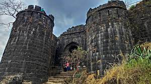
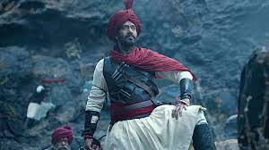

Tanhaji Malusare was a warrior and commander of Shivaji. A local poet Tulsidas, wrote a powada describing Subhedar Tanhaji's heroics and sacrifice of life in the Battle of Sinhagad, which has since made him a popular figure in Indian folklore.According to the historian David Hardiman, Kolis were the early helpers of Chatrapati Shivaji Maharaj in a revolt. Tanhaji Malusare is one such prominent example of a Koli whose name is memorizalized due to his act of capturing the fort of Singhad and handing it to Shivaji.[6]Tanhaji's father's name was Kaloji Malusare.He was around the time when he took his pledge at Rayareshwar's temple to establish a sovereign kingdom. He was part of Maratha troops in the battle of Paratpgad, where Shivaji Maharaj killed Afzal Khan.
Tanhaji Malusare.
Battle of Sinhagad:
In 1665, the Treaty of Purandar required Shivaji to give up the Maratha fort Kondhana to the Mughals. Kondhana, located near Pune, was one of the most heavily fortified and strategically placed. It was garrisoned thereafter by Rajput, Arab and Pathan troop guards of the Mughals, such that it was all but impenetrable. The very capable commander at the helm of it was Udaybhan Rathore, appointed by Mughal Army chief Jai Singh I. The idea of Mughals taking control of the fort was deeply disturbing and enraging to Shivaji’s mother Rajmata Jijabai. The conquest was considered virtually impossible but her decision was made. Upon knowing that her wish was unrelenting and set in stone, Shivaji entrusted Taanaji, the only man he could think of capable of finishing this dangerous mission — to reconquer the fort Kondhana, at any cost. So Taanaji rallied his troops of 1000 mavals and marched towards the fort in February 1670.
Unsung Fact
During that time, Tanhaji was busy preparing for the wedding of his son, Rabaya. However, when the Chhatrapati summoned him for the cause, he put a hold on all preparations. He took charge of the mission on the condition that he would be allowed to pick 1000 malawas of his choice. Now, the only problem was the location of the Kondhana fort. It is situated on the eastern side of the Sahyadri range, near the point at which Purandar hills branch off into the Deccan. This means that you can only enter the fort from the east or the west via very narrow ridges, which were heavily guarded. The south and north side was covered by a huge mountain, parts of which were nearly perpendicular. Penetrating the fort without notifying the Mughal soldiers was nearly impossible.